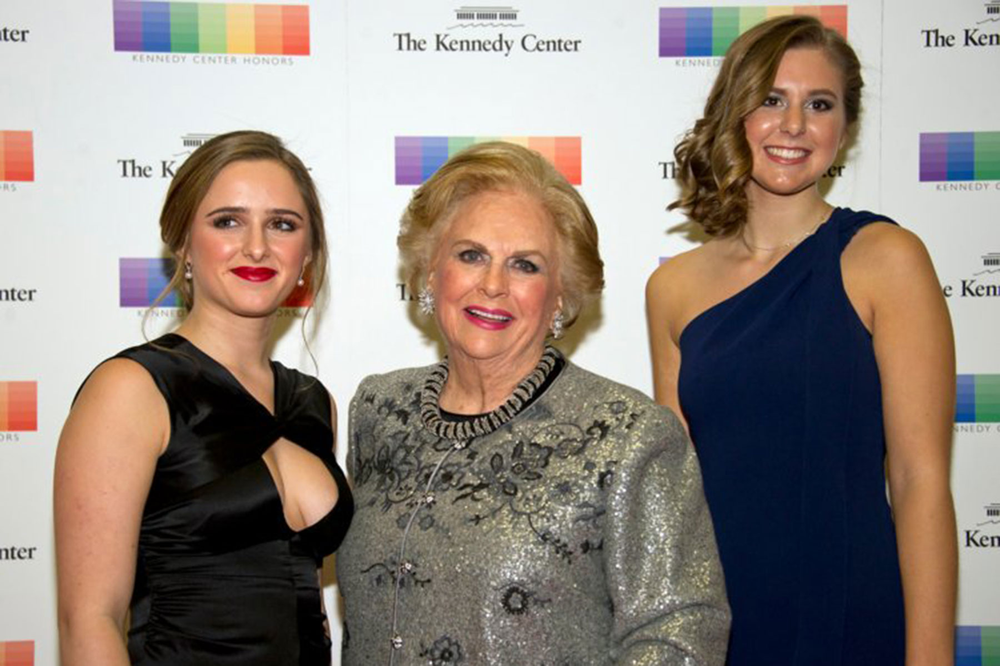

4. Mars Family
*Estimated Wealth:$141.9 billion
*Company: Mars Incorporated
- Mars is the Walmart of candy—a multigenerational family business that is ubiquitous and wildly popular. Today, the company is better known for making M&Ms than for its eponymous Mars bar. In 2017, the world’s largest candy company diversified with the purchase of VCA, a pet care company, for $9.1 billion.
- Siblings Jacqueline and John Mars, whose grandfather, Frank Mars, founded the company, each have a net worth of $38.3 billion and are tied for No. 31 on Forbes' list of billionaires as of Dec. 24, 2023.
4
The company is now being run by some of their children, the fourth generation of Mars family members.